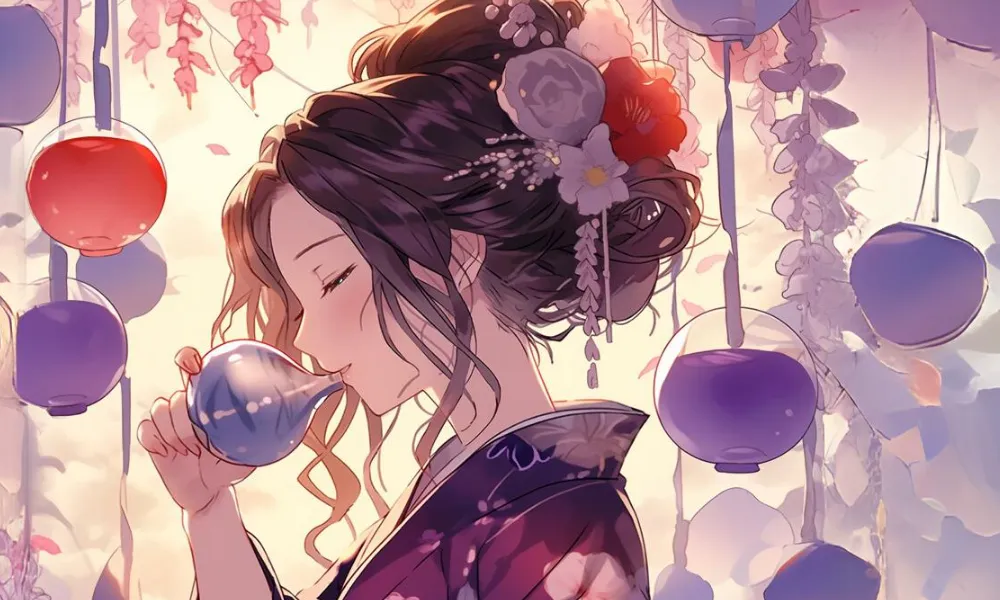
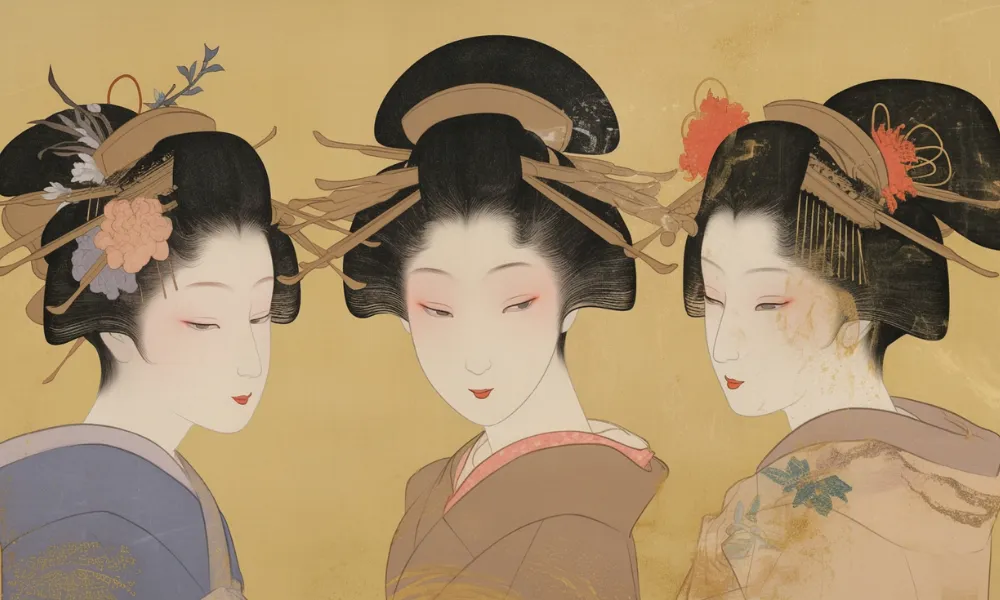

喜多川歌麿
美人画への情熱
紫色
喜多川歌麿は紫色を得意としたと言われている。
ビードロを吹く女
背景はビードロを吹く女をイメージ。ぽっぴんなどとも呼ばれ、吹くと音の出るおもちゃだった。


[人物プロフィール]
生没年
1753年～1806年
時代
江戸時代
身分
芸術家・浮世絵師・画家

彼の描いた美人画は、当時のファッション雑誌みたいなものだったんだ。
 喜多川歌麿ってどんなひと？
喜多川歌麿ってどんなひと？
江戸時代の浮世絵師で、美人画を得意としました。彼の描く女性たちは、その優雅さと繊細な表現で多くの人々に愛されました。特に「ポッピンを吹く女」などの作品は有名です。
コラム
（カード右上）人真似は嫌いで、今まで人の絵を写して描いたことはない。
カードの効果解説！
ビードロを吹く女
「ビードロを吹く女」は、江戸時代の美人画家、喜多川歌麿の作品です。ビードロはガラスの一種で、この絵では女性がビードロを吹く姿が描かれています。歌麿の美人画は、その繊細な描写で多くの人々に愛されました。
寛政三美人
寛政三美人は、喜多川歌麿が描いた美人画の一つです。三人の美しい女性が描かれており、その繊細な描写が特徴です。歌麿の美人画は、江戸時代の文化を象徴しています。

弥生時代ってどんな時代？
弥生時代ってこんな時代 ってのをなんとなく。時代かぶってたりしたら関連人物 との繋がりについて纏める感 じで。弥生時代ってこんな時代 ってのをなんとなく。時代かぶってたりしたら関連人物 との繋がりについて纏める感 じで。


クイズ！：喜多川歌麿が得意だった浮世絵のテーマはなんでしょう？